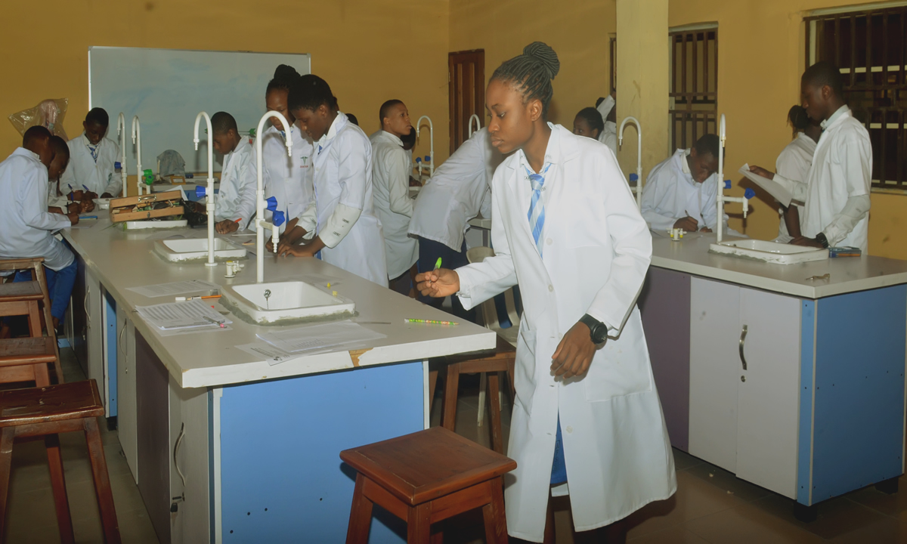

Nurturing excellence, building future leaders since 1999.
Apply now Our resultsTo provide holistic, quality education that empowers students to achieve academic excellence, moral integrity and leadership for community development.
To be a leading center of learning that nurtures innovative, disciplined and responsible citizens prepared for global opportunities and challenges.
Integrity, excellence, discipline, respect, service, compassion and godliness.
Located in Kampala, Uganda, St Maris High School is a distinguished girls boarding school committed to academic excellence, spiritual growth and character formation. Since 1999, we have grown into one of the most respected schools in the country.
Comprehensive pathways for student success.

Physics, Chemistry, Biology
History, CRE, Economics
Sports, clubs, sisterhood
At St Maris we don't just teach, we transform. We return a confident, disciplined and academically excellent young woman ready for university and life. Welcome to the St Maris family.
Ms.Arihenda Beatrice, Principal